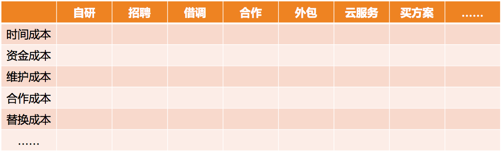
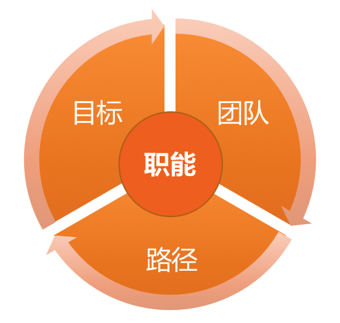

- 00 开篇词 你为什么需要学管理？.md.html
- 01 多年前的那些工程师都去哪了？.md.html
- 02 我要不要做管理呢？内心好纠结！.md.html
- 03 哪些人比较容易走上管理岗位？.md.html
- 04 我要不要转回去做技术呢？.md.html
- 05 作为技术管理者，我如何保持技术判断力？.md.html
- 06 我这样的风格能做管理吗？.md.html
- 07 我能做好管理吗，大家服我吗？.md.html
- 08 管理到底都做哪些事儿？.md.html
- 09 从工程师到管理者，角色都发生了哪些变化？.md.html
- 10 新经理常踩的坑儿有哪些？.md.html
- 11 我刚开始带团队，从哪里着手呢？.md.html
- 12 如何界定我团队是干什么的呢？.md.html
- 13 如何为团队设定合理的目标呢？.md.html
- 14 如何来规划团队的组织结构呢？.md.html
- 15 我都要申请哪些资源呢？.md.html
- 16 团队建设该从哪里入手？.md.html
- 17 如何提升员工的个人能力？.md.html
- 18 如何提升员工的工作意愿和积极性？.md.html
- 19 如何兼顾团队分工的稳定性和灵活性？.md.html
- 20 有什么方法可以有效提升团队凝聚力吗？.md.html
- 21 如何物色和培养核心人才？.md.html
- 22 如何建设团队文化，营造团队氛围？.md.html
- 23 如何和低绩效员工谈绩效？.md.html
- 24 如何让团建活动不再“收效甚微”？.md.html
- 25 多任务并行该如何应对？.md.html
- 26 如何确保项目的有效执行？.md.html
- 27 如何让流程机制得到有效的执行？.md.html
- 28 管理沟通那些事儿.md.html
- 29 沟通经常鸡同鸭讲，说不到一块怎么办？.md.html
- 30 如何掌控自己的情绪，以及如何管理情绪化的员工？.md.html
- 31 我各方面做得都很好，就是做不好向上沟通.md.html
- 32 横向沟通和非职权影响力.md.html
- 33 向下沟通的常见实例解析.md.html
- 34 管理沟通上有哪些常见的坑儿呢？.md.html
- 35 从空降谈管理方法论的积累.md.html
- 36 走出自己的管理之路.md.html
- 捐赠
15 我都要申请哪些资源呢？
做管理规划，无论你是想评估团队的投入产出，还是给上级做工作汇报，都有一个必要的内容，就是要弄清楚，你需要投入多少资源。而投入多少资源，除了和希望达成的目标相互匹配，还和你选择什么样的路径和手段息息相关。
接下来，我们就集中探讨一下管理规划的第四个要素：路径选择和资源申请的问题。
可能很多一线技术管理者会说，我需要考虑的资源类型非常单一，基本上每次申请资源都是增加人力，这没有什么难的。我想说，增加人手没有问题，只是在采用“增加人手”这个方案之前，你是否考虑到如下的三个问题了呢？
第一个问题，你是否了解资源的丰富性呢？
一提到资源申请，人们大多会想到的是人、财、物这三大项。对于做技术团队管理的你来说，“人”，是最常见的资源。而且，“财”和“物”的预算一般也围绕着团队的人数来做，比如团建费用、培训费用、差旅费用、办公设备等等，都是基于团队人数来预算的，整体上并不复杂。
但这里我需要提醒你的是，还有其他几类资源也需要关注，可不要忽略。
首先是时间。很多管理者会忽略时间这个最重要的资源。对于任何一项工作，你预算多少人和你预算多少时间是分不开的。所以，做规划的时候，也需要了解上级对于各项工作的时间预期是什么样的。这意味着，上级允许你花多少时间来做这些工作。
千万别认为，上级批准了你的人力预算就等于给了你充足的资源，因为还得看看上级给了你多少时间。而且，上级固然有上级的期待，但你还是得有自己的判断，因为你最清楚各项工作的具体情况，需要综合你对紧急重要程度的理解做出判断。所以，请把时间当做资源来看待，这样你会更加清楚对于投入的理解。
其次是信息。信息资源，是另外一个常被忽视的资源。有的时候，你需要更多的公司内外的信息，可能是业务的，也可能是人员的；你的工作如果需要特殊的信息和数据，需要提前和上级沟通，寻求必要的支持。
最后是权限。和信息资源类似，也是出于做好某项工作的目的，你可以看看需要开通哪些之前不具备的权限，以及这些权限是否可获得。比如有的公司一线管理者是有沟通绩效权限的，而有的公司则不允许。如果你要把绩效作为重要的人才培养和激励手段的话，就得考虑你能否获取这样的权限。
类似的还有，你是否拥有使用奖金激励的权限，你是否被允许参加某个会议的权限等，这都可以是你要关注的资源。
所以你看，除了人、财、物，你还需要很多资源的支持，所以当你评估一个平台是否有发挥空间时，可不只是看职位高低，人员多寡。你能否得到全方位的支持，也是很重要的因素。当然，前提是你知道自己需要什么。
第二个问题，你是否意识到手段的多样性呢？
工程师出身的管理者，“炫技”的情况比较常见，其中一个显著特征就是，只有自己开发的作品才是最好的，一有机会就重构，因为，“前人写的东西实在是太烂了，不能忍受”，崇尚亲力亲为，凡事自己开发。所以，一旦有大的新需求，用他们的话说，那得“招聘一些工程师才能做”。
站在工程师视角上，追求工作的极致品质，恰恰是一种良好的工匠精神。但是站在管理者视角上，就需要评估一段时间内的产出效率了。衡量一项工作“到底需要花 5 天做到 70 分，还是 10 天做到 90 分”，是管理者的日常工作。90 分方案未必就比 70 分方案好，此时，就需要优秀工程师出身的你放弃一些执念了。一旦放松这个念头，你就会发现，完成一项工作，原来还有很多的手段可以选择。下面我就来列举一些。
比如你想做一个新功能，诸如“人脸识别”“自动推荐”“反作弊”等。以下的做法是不同的管理者所采用过的：
在不同的公司、不同的期待之下，不同的管理者会做出不同的选择。这不同的选择会带来不同的效果，同时也意味着不同的成本。
对于自学自研来说，由于靠自己团队的力量，资金开销比较低，维护成本也可控；而由于需要边学边做，时间成本会比较高。
对于招聘来说，不确定性比较高，招聘顺利固然好，但招聘不顺则时间完全不可预期，整体上时间成本比较高。
对于人才借调来说，如果能借调到合适的人，各方面的成本是最低的，但是需要这个事情足够重要才能获得支持。在中大型公司里的管理者，可以把这个方法作为可选路径之一，而早期公司，一般并不具备这个条件。
对于跨部门合作来说，项目推进的可控性取决于合作情况，这里最大的风险就是合作成本能否控制住。
对于外包来说，时间和资金成本一般都可控，用来做尝试性项目或者 demo 是比较合理的。但如果是长期的任务，你会发现外包的解决方案可维护性比较差，迁移和替换的成本会比较高。
采购云服务，对于中小公司来说，其实是很好的解决方案，对人才成本、维护成本、时间成本，都可以降得很低，特别适合初创公司，所以你看业内的云服务层出不穷，确实有价值。
买方案，是时间成本很低，资金成本略高的一种方案。在应急的情况下，或者是公司非核心业务的场景下，这倒不失为一种好的解决方案。
以上的说法和判断，是我基于我之前的团队情况给出的。那么对于你来说，不同的方案意味着着多大程度的成本呢，你可以尝试把你认为的“大”“中”“小”填入下表中。这个表格最大的意义不在于让你去评估每一种方案的成本大小，而在于扩展你的管理思路，看到解决问题手段的多样性，避免思路过于单一，就达到目的了。

手段 - 成本盘点图
第三个问题，即人力资源的持续性。通俗说就是，不是所有的人力短缺，都要通过招聘来解决。
在我给互联网公司做技术管理咨询的过程中，遇到不少中小型公司的技术负责人或创始人，动辄让我帮忙介绍某技术领域的资深专家。他们常常会这样跟我说：
说法 1：“对于我们这个业务来说，数据很重要，我需要搭个数据团队，能帮我介绍一位数据大牛吗？”可实际情况是，自己连数据需求都描述不清楚，只是直觉上认为这能给公司带来价值，其实每天的数据量，拉个表格都能看清楚了。
说法 2：“我们接下来要做智能推荐系统，得招两个专门做推荐算法的。”但实际情况是，大部分数据都是格式化数据，却连最基本的推荐策略都还没做，还远远达不到专业瓶颈。
说法 3：“我们需要招两个做专业图像处理和模式识别的。”但实际情况是，公司业务的核心竞争力在于 O2O 业务，而不在于图像处理技术。
以上的这些说法，显然，他们太高估招聘能解决的问题了，而且太低估人才选用育留的成本了。事实上，牛人一般会嫌业务量小、平台小招聘不来，即便来了，成天形单影只的，也未必留得住。所以，招聘作为一种迟缓的解决问题的手段，更多地是看长线是否需要。
对于工程师思维特别重的管理者来说，他们尤其倚重技术；对于不懂技术的管理者来说，他们又特别迷信技术。而职业的技术管理者，就需要在这之间找到一个平衡，提供一个既能够解决问题，成本又合理的可操作的执行方案，而不是一个“走一步算一步”的对策。
以上的三个意识如果你都具备，能够从资源丰富性、手段多样性和人才持续性来预算你的资源，说明你已经是一位老道的管理者了。我们通常会说，管理者要做战略，所谓战略是什么呢？其实就是筹划把资源投在什么方向，以达成什么目标。所以，资源视角就是战略视角。
至此，我们探讨完了管理规划的全部四个要素：职能、目标、团队和路径。细心的你也许会发现，探讨路径以及预算资源的时候，离不开目标和团队；而盘点团队的时候，又脱不开目标和路径；而设定目标的时候，也需要基于当前团队的情况和可用资源。
也就是说，尽管我们是把目标、团队、路径分开来探讨的，但是这几个要素之间并不是割裂的，而是相互联系的。所以，只有你把这三个要素统筹起来，梳理明白，才能“产出”一份完整的管理规划。

“规划四要素”关系图
本文是“管理三部曲之管理规划篇”的最后一篇文章，整个“管理规划篇”其实都围绕着同一个主题展开，那就是弄清楚团队工作的方向问题。相信通过这几篇文章的探讨，你已经很清楚做一份管理规划都需要考虑哪些要素，以及各个要素的操作要点了。
那么，你现在有信心为自己的团队做一个清晰的规划了吗？
© 2019 - 2023 Liangliang Lee. Powered by gin and hexo-theme-book.